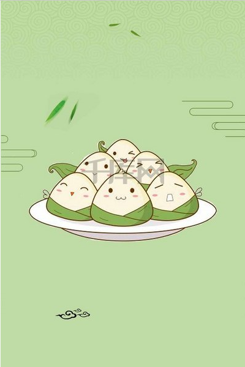
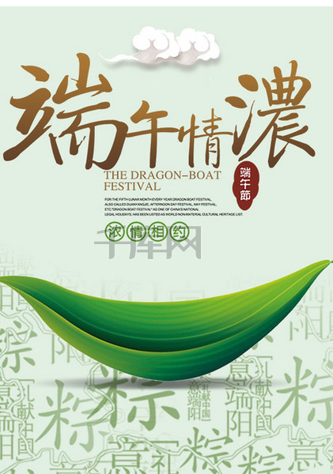
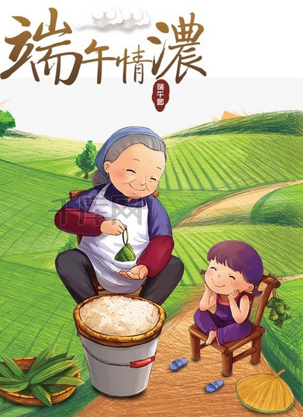

端午节，为每年农历五月初五,端午节还称“午日节、五月节、龙舟节、浴兰节、诗人节”等
端午节始于中国的春秋战国时期，至今已有2000多年历史。端午节与春节、清明节、中秋节并称为中国民间的四大传统节日.

自古以来端午节便有划龙舟及食粽等节日活动。自2008年起，端午节被列为国家法定节假日。

2009年9月，联合国教科文组织正式审议并批准中国端午节列入世界非物质文化遗产，成为中国首个入选世界非遗的节日
端”字有“初始”的意思，因此“端五”就是“初五”。而按照历法五月正是“午”月，因此“端五”也就渐渐演变成了“端午”。